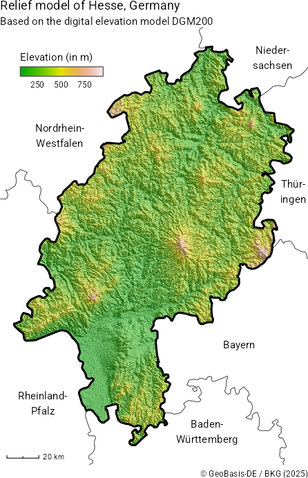
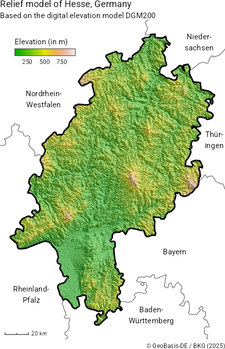
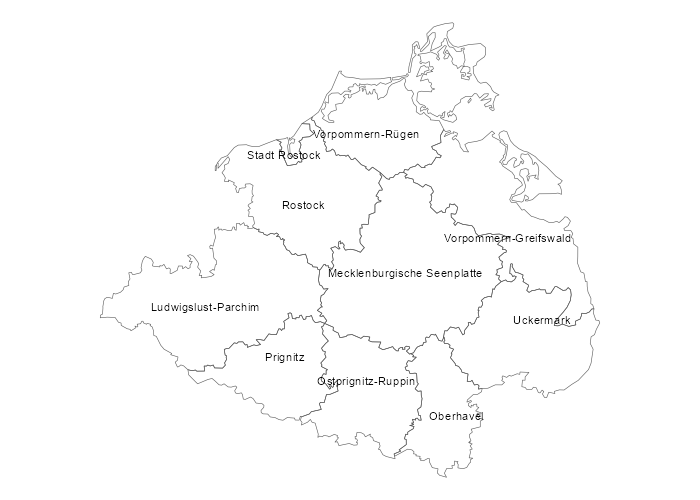

{ffm} is an R package that provides quick and easy access to data from the geodata center of Germany’s Federal Agency for Cartography and Geodesy (BKG). The BKG is the official provider of spatial data in Germany and provides quite a few datasets as open data. These data range from administrative areas to earth observation data and are often crucial when working with regional statistics from Germany. Part of the motivation for this package stems from frustration when working areal identifiers returned by packages like wiesbaden or restatis and not being able to quickly link them to their spatial representations.
The name ffm is based on the colloquial short name of Frankfurt am Main where the BKG’s headquarters are located.
Gallery
The following examples were created using {ffm}. You can see their code in the examples/ directory.
 

Installation
You can install the development version of ffm from GitHub with:
# install.packages("pak")
pak::pak("jslth/ffm")Example
Retrieving data is pretty straightforward:
Code for the plot
library(ggplot2)
ggplot(districts) +
geom_sf(fill = NA) +
theme_void()
The package makes it easy to go deeper than just getting the data. In many functions, you can use spatial filters.
districts <- bkg_admin(
level = "krs",
scale = "5000",
bbox = c(xmin = 700000, ymin = 5900000, xmax = 850000, ymax = 6000000),
predicate = "intersects"
)
districts$label <- ifelse(
districts$bez == "Kreisfreie Stadt",
paste("Stadt", districts$gen),
districts$gen
)Code for the plot

Attribute filters are supported using a R-like syntax.
Code for the plot
munics$popdens <- munics$ewz / munics$kfl
munics$popdens[munics$popdens == 0] <- NA
ggplot(munics) +
geom_sf(aes(fill = popdens), color = NA) +
scale_fill_viridis_b("Population / km²", transform = "log10") +
ggtitle("Population density in Southern Germany") +
theme_void()